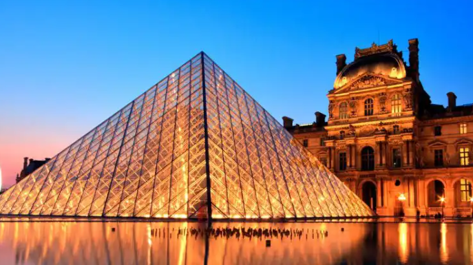
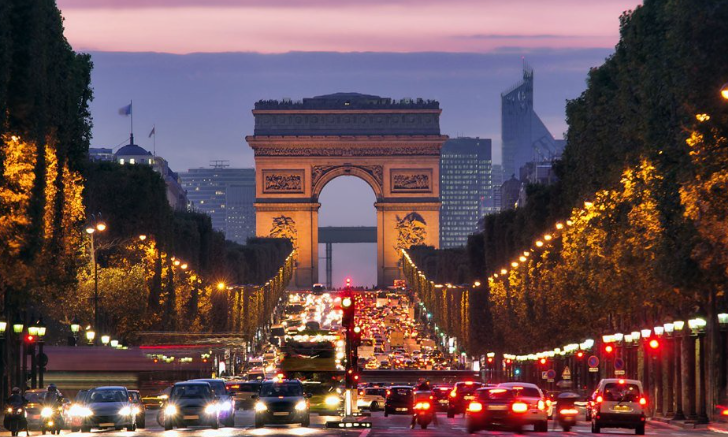

França: História, Cultura e Gastronomia
A França é um dos países mais influentes do mundo, conhecida por sua rica história, cultura, gastronomia e monumentos famosos. Localizada na Europa Ocidental, a França faz fronteira com países como Espanha, Itália, Alemanha e Bélgica. Sua capital, Paris, é considerada uma das cidades mais visitadas do planeta e recebe milhões de turistas todos os anos.
A história francesa teve grande impacto no desenvolvimento político e cultural da humanidade. Um dos acontecimentos mais importantes foi a Revolução Francesa, iniciada em 1789, que marcou a luta por liberdade, igualdade e fraternidade. Esses ideais influenciaram diversos países e ajudaram na formação das democracias modernas.

A cultura francesa é admirada mundialmente. O país é conhecido pela arte, literatura, cinema e moda. Grandes artistas, como Claude Monet e Victor Hugo, ajudaram a construir a reputação cultural da França ao longo dos séculos. Na moda, marcas francesas famosas como Chanel e Louis Vuitton são símbolos de luxo e elegância.
Outro ponto muito famoso é a gastronomia francesa. Pratos como croissant, ratatouille, quiche e diversos tipos de queijo fazem parte da culinária tradicional do país. A França também é reconhecida pela produção de vinhos de alta qualidade, especialmente nas regiões de Bordeaux e Champagne.

Entre os principais pontos turísticos franceses, destaca-se a Torre Eiffel, construída em 1889 e considerada um dos maiores símbolos do país. Outro local bastante visitado é o Museu do Louvre, que abriga obras famosas como a pintura Mona Lisa, de Leonardo da Vinci. Além disso, a Catedral de Notre-Dame impressiona pela arquitetura gótica.
A França também possui belas paisagens naturais. A região da Provence é conhecida pelos campos de lavanda, enquanto os Alpes Franceses atraem turistas interessados em esportes de inverno. Uma curiosidade é que a França é o país mais visitado do mundo em número de turistas internacionais.
Referências
- Site oficial de turismo da França
- Britannica – France
- UNESCO – Patrimônios da França